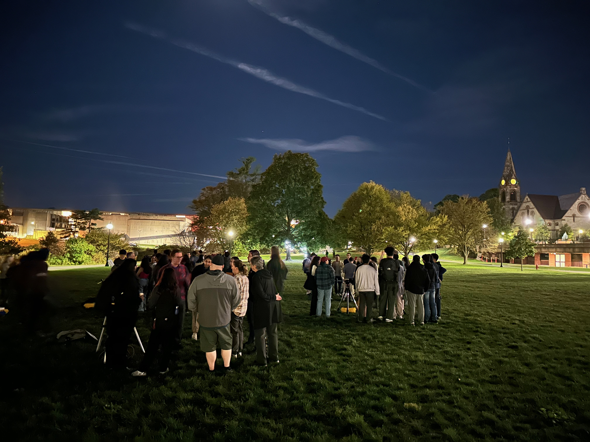
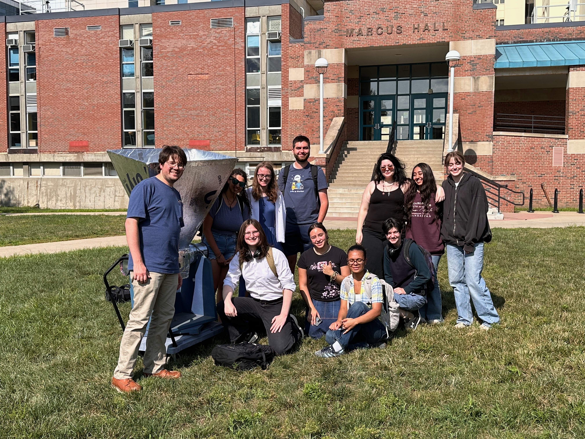

Outreach
Astronomy is for Everyone
Astronomy should be accessible to everyone, not just those who study it professionally! Looking through a telescope can inspire curiosity about the universe and provide an opportunity to engage with science. At UMass I have the the Astronomy is for Everyone public outreach initiative. The goal of the program is simple: to make astronomy accessible to the broader campus community by bringing telescopes directly to students. By setting up telescopes in the center of campus, we give students and passersby the opportunity to observe the night sky, ask questions, and experience astronomy firsthand, regardless of their academic background or prior experience.

Astronomy Merit Badge
As an Eagle Scout, I believe that Scouting America plays an important role in helping young people develop valuable practical skills, leadership abilities, and a sense of curiosity about the world around them. Through Scouting, I have had the opportunity to share my passion for astronomy by teaching the Astronomy Merit Badge to a local Scout troop. This experience has allowed me to introduce young people to the wonders of the night sky while encouraging scientific curiosity and hands-on learning.
Radio Astronomy Mini-School
Radio astronomy is an often underrepresented subject in undergraduate astronomy and physics curricula, particularly when it comes to the instrumentation used to make observations. To help bridge this gap, I organized and led a summer radio astronomy mini-school at UMass. The school introduced students to the astrophysical processes observable at radio wavelengths and the instrumentation and techniques used to study them.
The mini-school culminated in a hands-on exploration of the 21 cm emission line of neutral hydrogen. Students were introduced to the physics of the hydrogen hyperfine transition before working through an interactive python notebook exploring Doppler broadening and shifts of the 21 cm line. Using a realistic model of galactic rotation, students generated simulated hydrogen spectra and connected the underlying physics to observable features of the Milky Way. Finally, students put this knowledge into practice by using a homemade 21 cm horn antenna to measure radio emission from galactic hydrogen, bringing together astrophysical theory, computational modeling, instrumentation, and observation.
